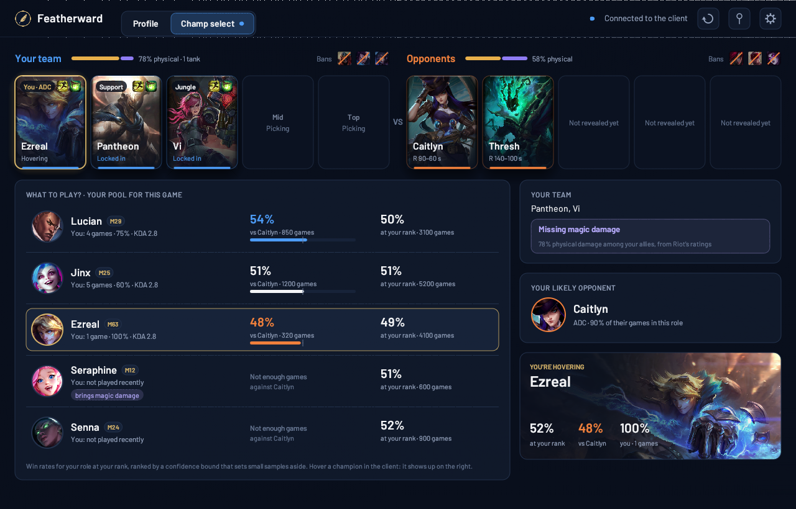
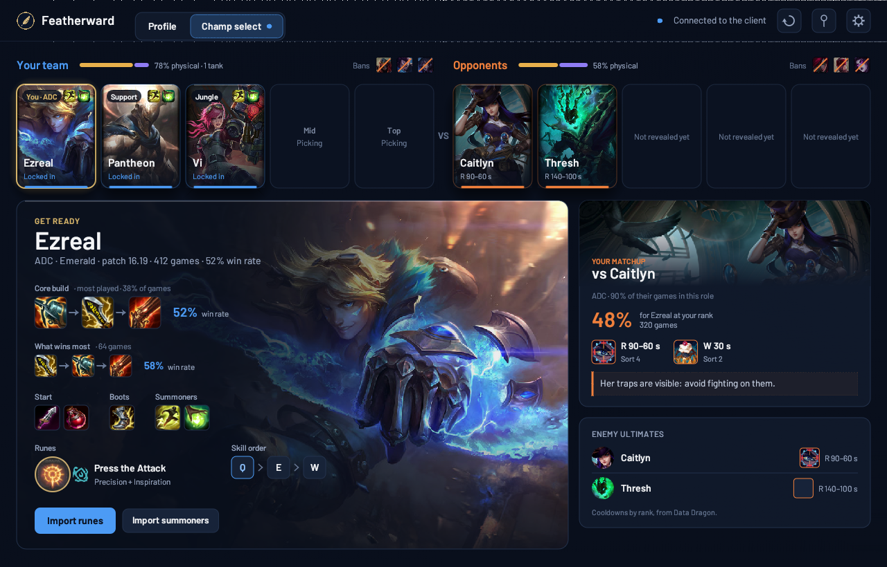
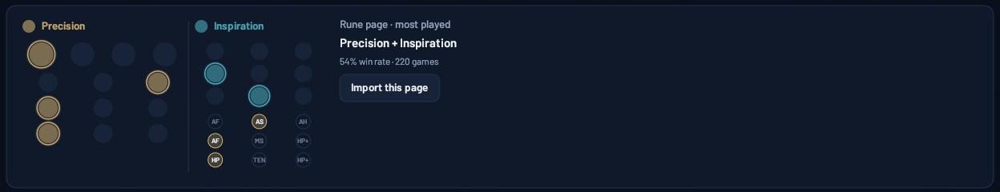
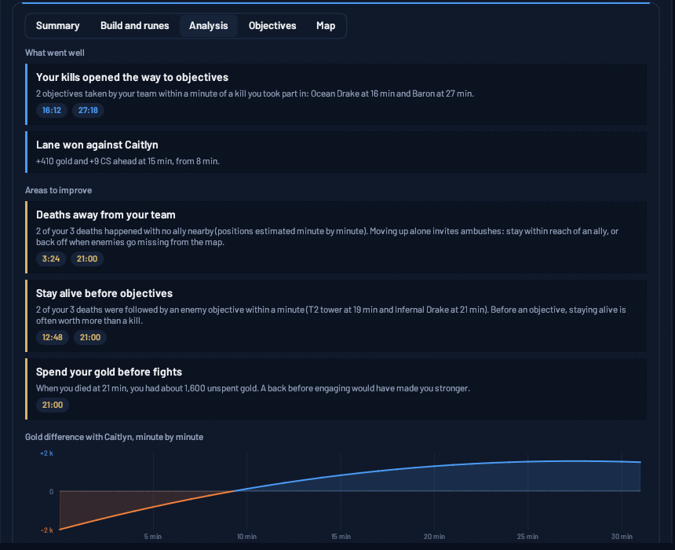
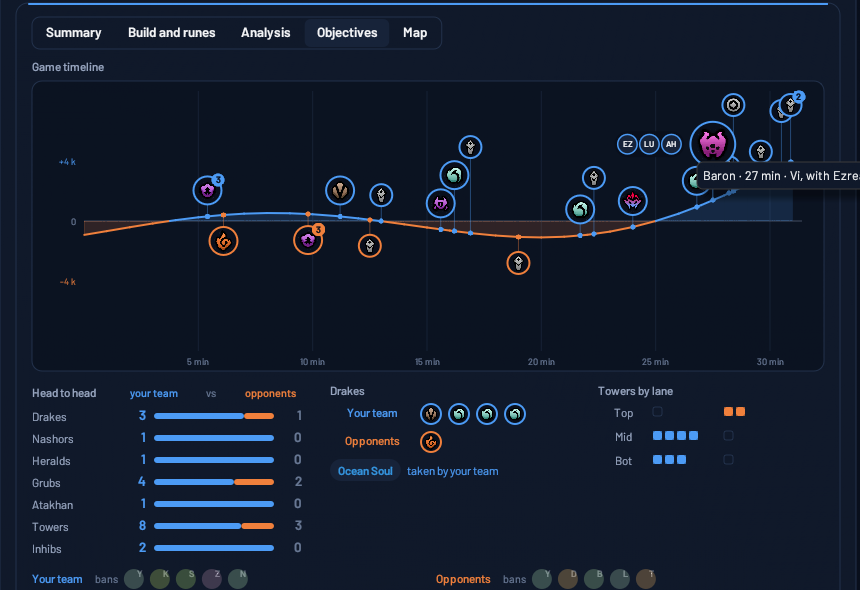
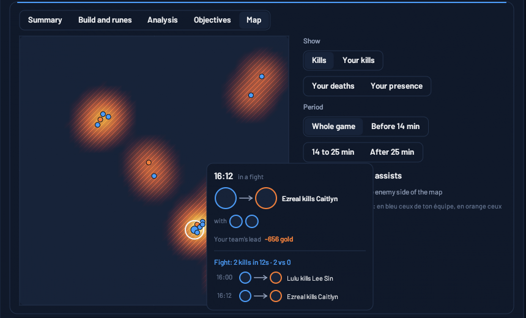
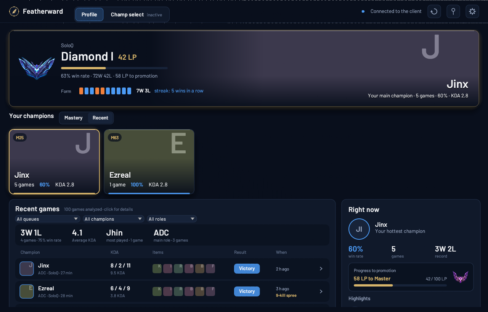

Production key application
This page is provided for Riot Games' review of Featherward's production API key application. It holds the full application, which does not fit in the Developer Portal form. It will be removed once the application is approved.
Product
- Name: Featherward
- Website: https://featherward.lol/en/
- Developer: Clément FRANCOIS, independent developer based in France, publishing as a private individual.
- Contact: contact@featherward.lol
Short description
A lightweight Windows companion for League of Legends: champion select insights (team overview, enemy cooldowns, matchup, recommended build and runes) and post-game analysis of your own games (strengths, areas to improve, objectives timeline, heatmap). Free, no account, in English and French. An optional subscription is planned for later (local game recording and long-term personal stats); everything above stays free.
Product description
Featherward is a native Windows desktop app (written in Rust, about 5 MB of memory at rest, no activity during games). It lives in the notification area and opens by itself when champion select starts.
During champion select, it shows:
- the player's team and the enemy team (champions as soon as they are revealed, roles, damage profile), with enemy ability and summoner spell cooldowns from Data Dragon;
- before the player locks in, their own champions ranked for this game: against the likely lane matchup and at their rank (with sample sizes), and what each one brings to the team (estimated from Data Dragon's static ratings). Several options, never a single pick imposed;
- once locked in, the player's champion front and center, the likely lane matchup and the enemy ultimates with their cooldowns;
- a recommended build for the player's champion at their rank: items, boots, starting items, skill order, runes and summoner spells, always showing both the most played option and the highest win rate option, with the number of games. One click imports a rune page (into a dedicated "Featherward" page, never the player's own pages) or the summoner spells.
After games, from the player's own match history in the League client:
- a profile (rank, form, roles, champions, last 20 games);
- for each finished game, on demand: a summary and scoreboard, the build and runes, an analysis (strengths and up to three areas to improve, each backed by a timestamped fact: deaths away from the team, objectives lost after a death, unspent gold, missed teamfights, laning phase against the lane opponent), an objectives timeline pinned on the team's gold lead, and a kills/positions heatmap.
There is no score, no MMR estimate, and no comparison between players.
Planned
Not in the current version, described here for transparency:
- Teamfight Tactics: profile, match history and game details for the local player, solo and Double Up, from the League client only (the same rules as above: nothing during the game, no other player's identity before the game ends).
- Optional subscription (about 3 EUR per month or 30 EUR per year), only once the product is approved, for two features:
- local game recording: opt-in, off by default, video kept on the player's computer only. It uses Windows screen capture and the GPU encoder; key moments are marked after the game from the client's own game timeline. No game memory, no Live Client Data API, no information displayed during the game;
- long-term personal stats: the player's own finished games archived locally (the client keeps only the last 20) and explorable over time.
Compliance with Riot's policies
- No in-game information. Featherward never reads game memory and does not use the Live Client Data API. During a game, it reads the League client once at loading (the ten champions and their assigned positions), then nothing until the game ends.
- Champion select anonymity. During champion select, other players' identities (names, Riot IDs, PUUIDs) are never read. A player who is anonymous (streamer mode) stays anonymous: Featherward never looks up their identity by any other means.
- No MMR, no hidden ratings. Only game statistics.
- Several options, never one imposed. Recommendations always show the most played and the highest win rate options, with sample sizes; small samples are filtered out by a confidence bound.
- Writes to the client only on explicit click, during champion select, only to the dedicated "Featherward" rune page and the summoner spell selection.
- Legal notice ("Featherward isn't endorsed by Riot Games…") in the app settings and on every page of the website.
- Free tier. Everything described above is free, without ads or account. The planned subscription only covers new features (transformative: recording and long-term personal analysis), never Riot data as such, and will start only once the product is approved.
- Augments and Arena items: no win rate is shown for them, anywhere.
Riot API usage (production key)
Used only by the shared statistics service (server side, never in the desktop app; no key is shipped in the app):
| API | Endpoint | Purpose |
|---|---|---|
| League-V4 | /lol/league/v4/entries/RANKED_SOLO_5x5/{tier}/{division}, /lol/league/v4/{master,grandmaster,challenger}leagues/by-queue/RANKED_SOLO_5x5 | Find ranked players per rank tier, to sample recent ranked games. |
| Match-V5 | /lol/match/v5/matches/by-puuid/{puuid}/ids | Recent ranked game IDs of sampled players. |
| Match-V5 | /lol/match/v5/matches/{matchId} | Champions, roles, runes, summoner spells, items, result. |
| Match-V5 | /lol/match/v5/matches/{matchId}/timeline | Item purchase order and skill order. |
From these games, the service computes aggregated statistics per champion, role, rank tier and patch (builds, runes, matchups), and publishes them as static signed files (Ed25519 signed index with an expiry, SHA-256 checked packages) that the desktop app downloads. No player identifier is kept with the games: only champion, role, team, result, runes, summoner spells, skill order and items. A keyed fingerprint of the PUUID (HMAC-SHA-256, with a secret key stored apart from the database) is kept separately to avoid sampling the same player twice. Raw games are deleted once the statistics of their patch and the next one are computed.
Rate: the service respects the production limits with a margin (480 per 10 s, 29,000 per 10 min per region), honours Retry-After on 429, and runs as a batch job (a few thousand games per tier and patch).
Optionally (to be discussed): per-game item purchase order, skill order and stat shards for the player's own game details, which the League client does not provide. This would require a small relay holding the production key; it is not part of the current product.
League Client API (LCU) usage
Local only (127.0.0.1, port and password from the client's lockfile; the client's certificate is checked against Riot's root certificate). No data read from the client leaves the player's computer.
| Endpoint | Usage |
|---|---|
GET /riotclient/region-locale | At connection: only the client's language, to show Featherward and Data Dragon data in the same language. |
GET /lol-gameflow/v1/gameflow-phase | Current phase (champion select or not), at connection. |
GET /lol-champ-select/v1/session | Current champion select: picked and hovered champions, bans, assigned roles, summoner spells, and the local player's own selected skin (to show its splash art, taken from Data Dragon). Other players' identities are never read. |
GET /lol-gameflow/v1/session | Only once the game has started (GameStart or InProgress), never during champion select: the ten players' team, champion and assigned position, read once at loading. In ranked, the client provides no names; an anonymous player stays anonymous. |
GET /lol-champion-mastery/v1/local-player/champion-mastery | Local player's mastery: their champion pool and matchups. |
GET /lol-match-history/v1/products/lol/current-summoner/matches | Local player's last 20 games: form, roles, record per champion. |
GET /lol-ranked/v1/current-ranked-stats | Local player's rank: display, and choice of the statistics tier. |
GET /lol-match-history/v1/games/{id} | Details of one of the local player's games, only when they open it: champions, KDA, damage, items, runes and spells of the ten participants, and their Riot ID (gameName and tagLine only, no account identifier). |
GET /lol-match-history/v1/game-timelines/{id} | Timeline of a finished game of the local player, only when they open it: per-minute snapshots (gold, XP, CS, level, position) and events (champion kills and their location, epic monsters, buildings), for the analysis, objectives timeline and heatmap. |
GET /lol-perks/v1/pages | Rune pages, to find the "Featherward" page before an import. |
GET /lol-summoner/v1/current-summoner | At connection: only the local player's PUUID, reduced to an in-memory fingerprint (never stored or sent) to detect an account change. |
Subscriptions (WebSocket): lol-gameflow_v1_gameflow-phase, lol-champ-select_v1_session, lol-summoner_v1_current-summoner. No general subscription.
Writes, only on explicit player click during champion select:
| Endpoint | Usage |
|---|---|
PUT /lol-perks/v1/pages/{id} | Update the rune page named "Featherward", if it exists and is editable. |
POST /lol-perks/v1/pages | Create the "Featherward" page otherwise. With no free slot, Featherward tells the player and overwrites nothing. |
PUT /lol-perks/v1/currentpage | Select the updated "Featherward" page. |
PATCH /lol-champ-select/v1/session/my-selection | Set the suggested summoner spells, keeping the slot of spells the player already had. |
Featherward never changes the player's own rune pages, and never picks or locks a champion.
Data and privacy
- No account, no sign-up, no trackers, no ads.
- The player's stats and game analysis are computed on their computer and never sent anywhere.
- The desktop app downloads only Data Dragon (Riot) and the shared statistics for the player's server and rank tier (featherward.lol).
- Privacy policy: https://featherward.lol/en/privacy.html
Build for review
The public download is not open yet. A Windows build can be shared with the reviewers on request: contact@featherward.lol.
Screenshots
Champion select, before locking in:

Champion select, once locked in:

Rune page import:

Game analysis:

Objectives timeline:

Heatmap:

Profile:

The screenshots use sample data.